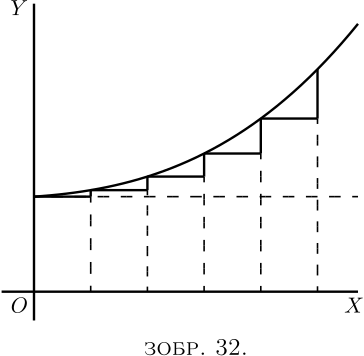

Повертаючись до процесу послідовного диференціювання, можна запитати: навіщо комусь хотіти диференціювати двічі? Ми знаємо, що коли змінними величинами є простір і час, шляхом подвійного диференціювання ми отримуємо прискорення рухомого тіла, і що в геометричній інтерпретації, у застосуванні до кривих, $\dfrac{dy}{dx}$ означає нахил кривої. Але що може означати $\dfrac{d^2 y}{dx^2}$ у цьому випадку? Зрозуміло, що це швидкість (на одиницю довжини $x$), з якою змінюється нахил, коротко кажучи, це міра кривини нахилу.

Припустимо постійний нахил, як на Зображенні 31.
Тут $\dfrac{dy}{dx}$ має постійне значення.
Припустимо, однак, випадок, у якому, як на Зображенні 32, сам нахил стає більшим угору. Тоді $\dfrac{d\left(\dfrac{dy}{dx}\right)}{dx}$, тобто $\dfrac{d^2y}{dx^2 }$, буде позитивним.
Якщо нахил стає меншим, коли ви рухаєтесь праворуч (як на Зображенні 14), або як на Зображенні 33, тоді, навіть якщо крива може рухатися вгору, нахил зменшується, і її $\dfrac{d^2y}{dx^2}$ буде негативним.
Настав час відкрити вам ще одну таємницю — як визначити, чи результат, який ви отримуєте, «прирівнюючи до нуля», є максимумом чи мінімумом. Фокус полягає в наступному: після того, як ви продиференціювали (щоб отримати вираз, який прирівнюєте до нуля), ви диференціюєте вдруге і дивитесь, чи є результат другого диференціювання позитивним або негативним. Якщо $\dfrac{d^2y}{dx^2}$ вийде позитивним, тоді ви знатимете, що значення $y$, яке ви отримали, було мінімумом; але якщо $\dfrac{d^2y}{dx^2}$ вийде негативним, тоді отримане значення $y$ має бути максимумом. Це і є правило.
Причина цього має бути цілком очевидною. Подумайте про будь-яку криву, яка має точку мінімуму (наприклад Зображення 15), або як Зображення 34, де точка мінімуму $y$ позначена $M$, а крива —увігнута вгору. Ліворуч від $M$ нахил іде вниз, тобто негативний, і стає менш негативним. Праворуч від $M$ нахил почав йти вгору, і йде все більше і більше вгору. Очевидно, що зміна нахилу, коли крива проходить через $M$, є такою, що $\dfrac{d^2y}{dx^2}$ є позитивним, оскільки її вплив, коли $x$ збільшується праворуч, полягає у перетворенні схилу вниз на схил вгору.
Подібним чином розглянемо будь-яку криву, яка має точку максимуму (наприклад Зображення 16), або як Зображення 35, у місці, де крива опукла, а максимальна точка позначена $M$. У цьому випадку, коли крива проходить через $M$ зліва направо, її нахил угору перетворюється або від’ємний нахил, тобто вниз, так що в цьому випадку «нахил нахилу» $\dfrac{d^2y}{ dx^2}$ є негативним.
Повернемося тепер до прикладів з останнього розділу та перевіримо таким чином зроблені висновки щодо того, чи існує в якомусь конкретному випадку максимум чи мінімум. Нижче ви знайдете кілька виконаних прикладів.
(1) Знайдіть максимум або мінімум \begin{align*} \text{(a)}\quad y &= 4x^2-9x-6; \qquad \text{(b)}\quad y = 6 + 9x-4x^2; \\ \end{align*} і у кожному випадку визначте, чи це максимум або мінімум. \begin{align*} \text{(a)}\quad \dfrac{dy}{dx} &= 8x-9=0;\quad x=1\tfrac{1}{8},\quad \text{ і } y = -11.065.\\ \dfrac{d^2y}{dx^2} &= 8;\quad \text{це $+$; отже, це мінімум.} \\ \text{(b)}\quad {\dfrac{dy}{dx}} &= 9-8x=0;\quad x = 1\tfrac{1}{8}; \quad \text{ і } y = +11.065.\\ \dfrac{d^2y}{dx^2} &= -8;\quad \text{це $-$; отже, це максимум.} \end{align*}
(2) Знайдіть максимуми та мінімуми функції $y = x^3-3x+16$. \begin{align*} \dfrac{dy}{dx} &= 3x^2 - 3 = 0;\quad x^2 = 1;\quad \text{і } x = ±1.\\ \dfrac{d ^2y}{dx^2} &= 6x;\quad \text{для $x = 1$; це $+$}; \end{align*} отже, $x=1$ відповідає мінімуму $y=14$. Для $x=-1$ це $-$; отже $x=-1$ відповідає максимуму $y=+18$.
(3) Знайдіть максимуми та мінімуми $y=\dfrac{x-1}{x^2+2}$. \[ \frac{dy}{dx} = \frac{(x^2+2) × 1 - (x-1) × 2x}{(x^2+2)^2} = \frac{2x - x ^2 + 2}{(x^2 + 2)^2} = 0; \] або $x^2 - 2x - 2 = 0$, розв'язками якого є $x =+2.73$ і $x=-0.73$. \begin{align*} \dfrac{d^2y}{dx^2} &= - \frac{(x^2 + 2)^2 × (2x-2) - (x^2 - 2x - 2)(4x^3 + 8x)}{(x^2 + 2)^4} \\ &= - \frac{2x^5 - 6x^4 - 8x^3 - 8x^2 - 24x + 8}{(x^2 + 2)^4}. \end{align*}
Знаменник завжди додатний, тому достатньо визначити знак чисельника.
Якщо ми покладемо $x = 2.73$, чисельник буде від’ємним; максимум, $y = 0.183$.
Якщо ми покладемо $x=-0.73$, чисельник додатний; мінімум, $y=-0.683$.
(4) Витрати $C$ на обробку продукції певної фабрики змінюються залежно від тижневого виробництва $P$ відповідно до співвідношення $C = aP + \dfrac{b}{c+P} + d$, де $a $, $b$, $c$, $d$ — додатні константи. Для якого випуску витрати будуть найменшими? \[ \dfrac{dC}{dP} = a - \frac{b}{(c+P)^2} = 0\quad \text{для максимуму або мінімуму;} \] отже $a = \dfrac{b }{(c+P)^2}$ і $P = ±\sqrt{\dfrac{b}{a}} - c$.
Оскільки виробництво не може бути від’ємним, $P=+\sqrt{\dfrac{b}{a}} - c$. \begin{align*} Тепер, \frac{d^2C}{dP^2} &= + \frac{b(2c + 2P)}{(c + P)^4}, \end{align*} що є позитивним для всіх значень $P$; отже $P = +\sqrt{\dfrac{b}{a}} - c$ відповідає мінімуму.
(5) Загальна вартість $C$ за годину освітлення будівлі $N$ лампами певного типу становить \[ C = N\left(\frac{C_l}{t} + \frac{EPC_e}{1000})\right), \] де $E$ — комерційна ефективність (ват на свічку), $P$ — сила світла у свічках кожної лампи,
$t =$ середній термін служби кожної лампи в годинах,
$C_l =$ вартість оновлення в пенсах за годину використання,
$C_e =$ вартість енергії за $1000$ ват на годину.
Крім цього, співвідношення, що пов’язує середній термін служби лампи з комерційною ефективністю, з якою вона працює, становить приблизно $t = mE^n$, де $m$ і $n$ є константами, що залежать від типу лампи.
Знайдіть комерційну ефективність, за якої загальна вартість освітлення буде найменшою. \begin{align*} \text{ Маємо}\; C &= N\left(\frac{C_l}{m} E^{-n} + \frac{PC_e}{1000} E\right), \\ \dfrac{dC}{dE} &= \frac{ PC_e}{1000} - \frac{nC_l}{m} E^{-(n+1)} = 0 \end{align*} для максимуму або мінімуму. \[ E^{n+1} = \frac{1000 × nC_l}{mPC_e}\quad \text{і}\quad E = \sqrt[n+1]{\frac{1000 × nC_l}{mPC_e}} . \]
Це очевидно мінімум, оскільки \[ \frac{d^2C}{dE^2} = (n + 1) \frac{nC_l}{m} E^{-(n+2)}, \] що є позитивним для позитивного значення $E$.
Для типу ламп з силою світла $16$, $C_l=17$ пенсів, $C_e=5$ пенсів; і було знайдено, що $m=10$ і $n=3.6$. \[ E = \sqrt[4.6]{\frac{1000 × 3.6 × 17}{10 × 16 × 5}} = 2.6\text{ ват на свічку}. \]
(1) Знайдіть максимуми та мінімуми \[ y = x^3 + x^2 - 10x + 8. \]
(2) Дано $y = \dfrac{b}{a}x - cx^2$, знайдіть вирази для $\dfrac{dy}{dx}$ і для $\dfrac{d^2y}{dx^2 }$, також знайдіть значення $x$, яке робить $y$ максимальним або мінімальним, і покажіть, чи є воно максимальним чи мінімальним.
(3) Знайдіть, скільки максимумів і скільки мінімумів є на кривій, рівняння якої \[ y = 1 - \frac{x^2}{2} + \frac{x^4}{24}; \] і скільки на кривій з рівнянням \[ y = 1 - \frac{x^2}{2} + \frac{x^4}{24} - \frac{x^6}{720} . \]
(4) Знайдіть максимуми та мінімуми \[ y=2x+1+\frac{5}{x^2}. \]
(5) Знайдіть максимуми та мінімуми \[ y=\frac{3}{x^2+x+1}. \]
(6) Знайдіть максимуми та мінімуми \[ y=\frac{5x}{2+x^2}. \]
(7) Знайдіть максимуми та мінімуми \[ y=\frac{3x}{x^2-3} + \frac{x}{2} + 5. \]
(8) Розділіть число $N$ на дві частини таким чином, щоб трикратний квадрат однієї частини плюс подвоєний квадрат іншої частини був мінімумом.
(9) ККД $u$ електрогенератора при різних значеннях вихідної потужності $x$ виражається загальним рівнянням: \[ u=\frac{x}{a+bx+cx^2}; \] де $a$ — постійна величина, що залежить головним чином від втрат енергії в залізі, а $c$ — постійна величина, що залежить головним чином від опору мідних частин. Знайдіть вираз для того значення виходу, при якому ККД буде максимальним.
(10) Припустимо, відомо, що споживання вугілля певним пароплавом можна представити формулою $y = 0.3 + 0.001v^3$; де $y$ — кількість тонн вугілля, що спалюється за годину, а $v$ — швидкість, виражена в морських милях на годину. Вартість заробітної плати, відсотків на капітал і амортизація цього судна разом дорівнюють, за годину, вартості $1$ тонни вугілля. З якою швидкістю загальна вартість подорожі на $1000$ морських миль буде мінімальною? І, якщо вугілля коштує $10$ шилінгів за тонну, скільки становитиме ця мінімальна вартість подорожі?
(11) Знайдіть максимуми та мінімуми \[ y = ±\frac{x}{6}\sqrt{x(10-x)}. \]
(12) Знайдіть максимуми та мінімуми \[ y= 4x^3 - x^2 - 2x + 1. \]
(1) Макс.: $x = -2.19$, $y = 24.19$; мін.: $x = 1.52$, $y = -1.38$.
(2) $\dfrac{dy}{dx} = \dfrac{b}{a} - 2cx$; $\dfrac{d^2 y}{dx^2} = -2c$; $x = \dfrac{b}{2ac}$ (максимум).
(3) (a) Один максимум і два мінімуми. (b) Один максимум. ($x = 0$; інші точки не дійсні.)
(4) Мін.: $x = 1.71 $, $y = 6.14 $.
(5) Макс.: $x = -,5$, $y = 4$.
(6) Макс.: $x = 1.414$, $y = 1.7675 $. Мін.: $x = -1.414$, $y = 1.7675$.
(7) Макс.: $x = -3.565$, $y = 2.12$. Мін.: $x = +3.565$, $y = 7.88$.
(8) $0.4N$, $0.6N$.
(9) $x = \sqrt{\dfrac{a}{c}}$.
(10) Швидкість $8.66$ морських миль на годину. Витрачений час $115.47$ годин. Мінімальна вартість £$112$. $12$
(11) Макс. і мін. для $x = 7.5$, $y = ±5.414$. (Див. приклад № 10, тут.)
(12) Мін.: $x = \frac{1}{2}$, $y= 0.25$; макс.: $x = - \frac{1}{3}$, $y= 1.408$.